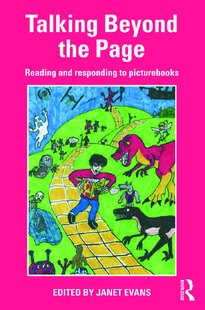
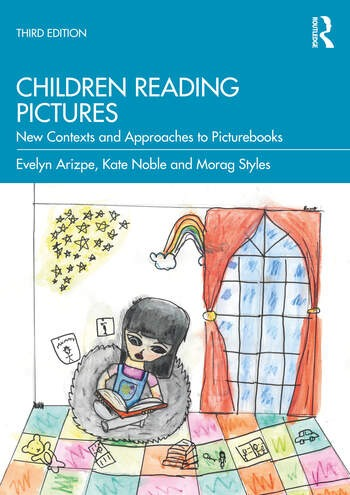

British Council: LearnEnglish Kids
English stories, songs and activities for children aged 5–12. Use a short story to introduce vocabulary, then invite children to retell it in English or a home language.
Explore short storiesExplore resources for diversity and inclusion in language learning, reading and storytelling. Find books that reflect a range of lives and practical ways to help more learners take part.
English stories, songs and activities for children aged 5–12. Use a short story to introduce vocabulary, then invite children to retell it in English or a home language.
Explore short storiesPractical ideas for sharing books at home. Follow the child’s interests and leave space to talk about the pictures as well as the words.
Explore reading tipsExplore the existing thematic book selections, including wordless picturebooks and books in languages other than English.
Browse the reading listsIn dialogic reading, children take an active part in a read-aloud. Pause to let them look closely at the pictures, ask what they notice or wonder about, and build on what they say. A question such as ‘What in the picture makes you think that?’ gives children a chance to explain their ideas and hear how others read the same page. The books below offer examples of children’s responses and ideas for planning these conversations.

Lawrence R. Sipe
Book details
Edited by Janet Evans
Use classroom examples to plan discussions before, during and after reading. Invite children to explain what they notice in the illustrations.
Book details
Evelyn Arizpe, Kate Noble and Morag Styles
Use examples from schools and museums to plan close looking and discussion with children from different language backgrounds.
Book detailsActivities for developing oral storytelling. Try telling a familiar story together, with children choosing characters, sounds or a different ending.
Explore storytelling activitiesFind sources of inclusive storytelling materials. Offer different ways to join in, such as speaking, signing, pointing, objects or recorded audio.
Explore accessible storytellingGuidance for educators and families on special educational needs and disabilities (SEND) and inclusive practice. Access conditions vary; some resources require membership.
Explore nasen resourcesUse the IBBY catalogue and themed reading lists to find books about disability and neurodivergence, and to explore accessible formats such as Braille and tactile books.
Explore the IBBY catalogue guideInformation on text-to-speech, digital books, reading pens and scanning apps. Start with the learner’s reading task and try available accessibility settings before choosing a device.
Explore reading supportContinue to the existing accessible print and audio reading resources.
Explore Reading Tools